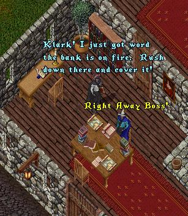
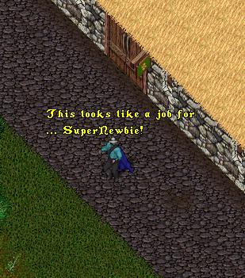
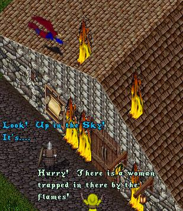
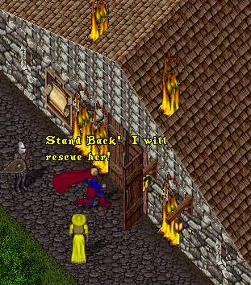
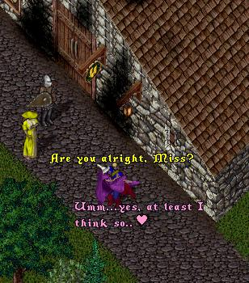
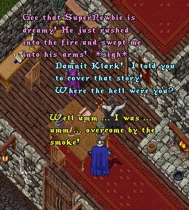
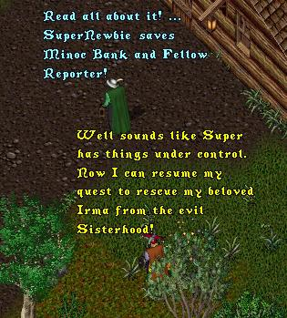

As this episode opens we find Klark Bent and his editor
'Parry Whyte' at Town Cryer headquarters.
 |
 |
Donning his SuperNewbie robes and taking flight,
he quickly arrives at the scene of the fire.
 |
Hearing the cries from the onlookers of a damsel
trapped in the burning bank, he rushes to save
her, little knowing that the woman is none-other
than his fellow town cryer, the lovely 'Lois Pain'!
|  |
Sweeping the helpless Lois into his arms, he
runs outside, dousing the fires with one
mighty puff of his super-breath.
 |
Later that day back at Town Cryer headquarters,
Lois recounts the daring rescue while Parry chews
out Klark for not getting the story.
 |
Meanwhile in a secluded outpost somewhere in
Britannia, ImaNewbie, still laying low, hears
the news of his son's heroic deeds.
 |